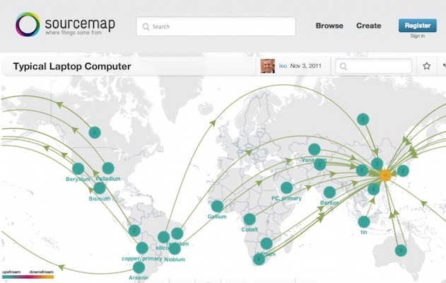
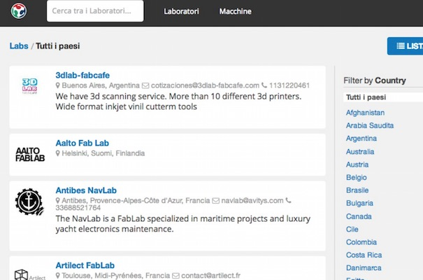
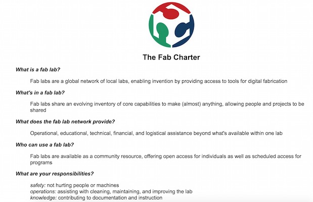

Open Design + Fab Lab
16 January 2014
01. Digital Fabrication + Fab Labs
02. Some Relevant Fab Labs
03. Some Fab Labs I've built
04. Organizations and Governance
01. Digital Fabrication + Fab Labs
Bits + Atoms: Two Directions
CBA MIT + Neil Gershenfeld
Source: http://cba.mit.edu/ - http://en.wikipedia.org/wiki/Neil_Gershenfeld
Fab 1.0: Machines + Computers
Source: http://www.google.com/patents?id=rRpqAAAAEBAJ&printsec=drawing&zoom=4#v=onepage&q&f=false
Fab 2.0: Self-Replicating Machines
Source: http://www.reprap.org/
Fab 3.0: Information in Materials
Fab 4.0: Machines/Computers in Materials
Even IDEO is working on this
Source: http://www.fastcompany.com/biomimicry/training-bacteria-to-grow-consumer-goods
Democratization of Digital Fabrication
Fab Lab: A Global Community
Source: Data from http://fablabs.io
The (larger) Italian Community
FABx: The Annual Global Event
Source: http://www.fab11.org
Fab Lab: What is it?
- A space about bits and atoms
- Part of a network
- A local and global community
- A set of tools
- A set of knowledge
- A set of processes
- A service
- Not a franchising
- A business
- A concept currently under development
Source: http://www.openp2pdesign.org/2013/spaces/what-is-a-fablab/
Learning + Collaboration
Source: http://www.flickr.com/photos/aaltofablab/8740909114/in/set-72157633484032773
Digital Craft
Source: http://www.flickr.com/photos/aaltofablab/7243041170/in/photostream
Not just prototypes / Personal Fabrication
Supply Chain + Sustainability
Source: http://www.sourcemap.com
Open Source, from the practice...
Source: http://www.flickr.com/photos/massimo_menichinelli/7325704122/in/photostream
02. Some Relevant Fab Labs
Fab Lab Amsterdam @ Waag
Source: http://www.flickr.com/photos/37873897@N06/4973326149/
Fab Lab Amsterdam @ Waag
Fab Lab Amsterdam @ Waag
Mini Fab Lab Amsterdam @ Utrecht
Source: http://web.me.com/bartbakker/saguaro/Mini_FabLab.html
Mobile Fab Lab

Fab Lab Barcelona @ IAAC
Source: http://www.flickr.com/photos/massimo_menichinelli/6766260627/in/set-72157629041599151/
Fab Lab Barcelona @ IAAC
Source: http://www.dyvikdesign.com/site/research/fablab/arriving-at-fablab-barcelona.html
Fab Lab Barcelona @ IAAC
Source: http://www.dyvikdesign.com/site/research/fablab/arriving-at-fablab-barcelona.html
Fab Lab Barcelona @ IAAC
Source: http://www.iaacblog.com/blog/2011/iaac-at-fab-7-in-lima-peru/
03. Some Fab Labs I've built
Aalto Fab Lab @ Aalto Media Factory
Source: http://www.flickr.com/photos/aaltofablab/8112009542/in/photostream
Aalto Fab Lab @ Aalto Media Factory
Source: http://www.flickr.com/photos/aaltofablab/8112001335/in/photostream
Aalto Fab Lab @ Aalto Media Factory

Source: http://www.flickr.com/photos/aaltofablab/9913335626/in/set-72157635833952295
Aalto Fab Lab @ Aalto Media Factory
Source: http://www.flickr.com/photos/aaltofablab/8002667488/in/set-72157631572499156
Aalto Fab Lab @ Aalto Media Factory
Source: http://www.flickr.com/photos/aaltofablab/7241749322/in/photostream
MUSE Fab Lab @ MUSE
Source: Alessandro Gadotti
MUSE Fab Lab @ MUSE
MUSE Fab Lab @ MUSE
MUSE Fab Lab @ MUSE
opendot @ dotdotdot
opendot @ dotdotdot
opendot @ dotdotdot
opendot @ dotdotdot
opendot @ dotdotdot
04. Organizations and Governance
Not MIT: Fab Foundation
Source: http://www.fabfoundation.org/
Not MIT: International Fab Lab Association
Platform: fablabs.io
Source: http://fablabs.io/
Italy: Fabber in Italia
Italy: Make in Italy (Associazione)
Source: http://www.makeinitaly.org/
Italy: Make in Italy CDB (Fondazione)
Fab Lab: What is it? 4 Rules
Fab Lab: Fab Charter
Fab Lab: Common Machines
Fab Lab: 100K inventory
Fab Lab: 10K inventory
Source: https://www.facebook.com/groups/smallfablab/1423291301223406/
Fab Lab: Video Conference 1@18.85.8.48
Thank you!
Massimo Menichinelli / info@openp2pdesign.org / @openp2pdesign

This work is licensed under a Creative Commons Attribution 4.0 International License.
Massimo Menichinelli 2015
openp2pdesign.org